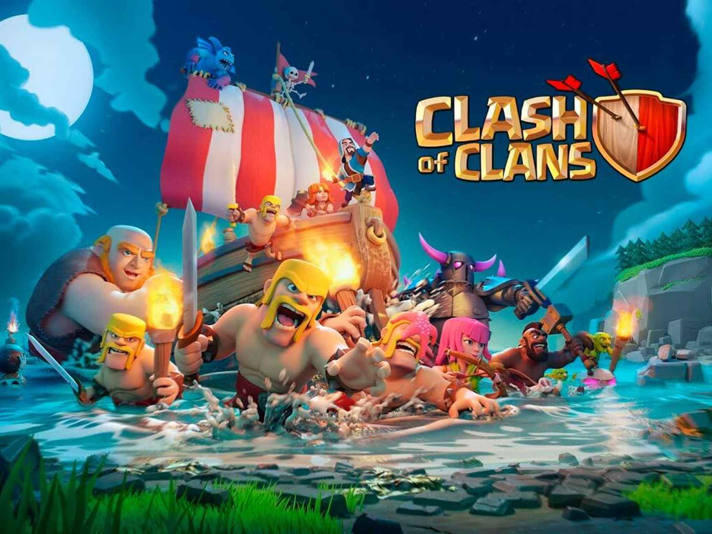
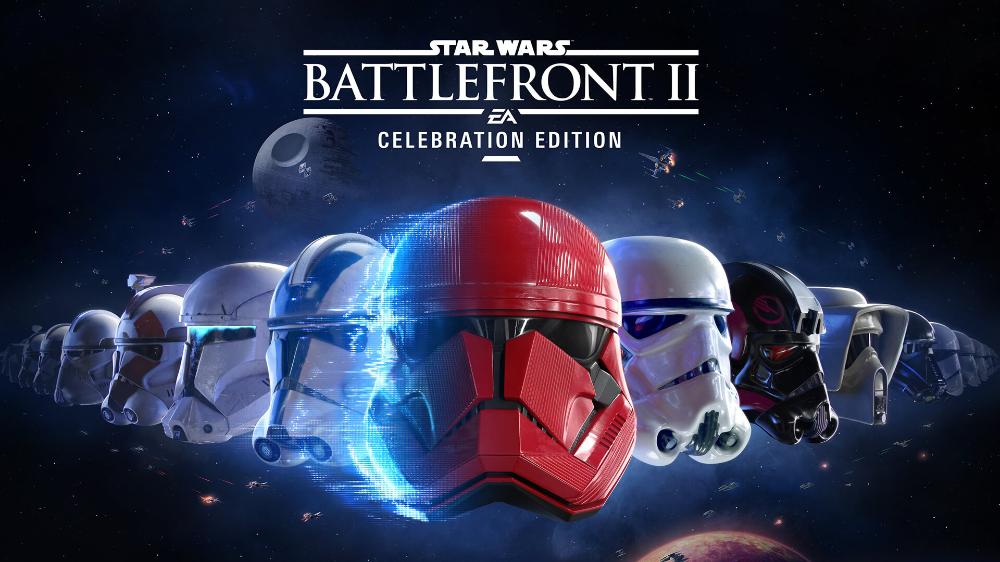
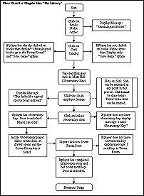
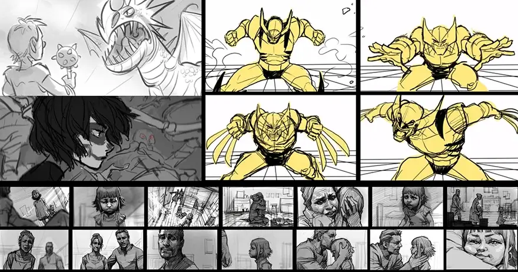
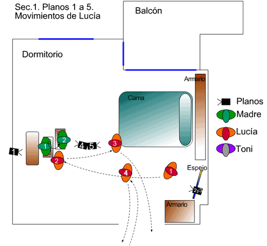

Storyboard i Cinemàtiques
Monetització
P2P (Pay-to-Play)
En aquest model, els jugadors han de pagar un preu inicial per adquirir el joc complet. Un cop realitzada la compra, el jugador té accés a tot el contingut del joc sense necessitat de fer més pagaments. Exemple: "The Witcher 3: Wild Hunt" és un joc de pagament únic on els jugadors paguen una vegada per accedir al joc complet.

F2P (Free-to-Play)
Aquest model permet als jugadors descarregar i jugar al joc de forma gratuïta, sense cap cost inicial. Els ingressos provenen de vendre articles virtuals, milloraments de joc o contingut addicional dins del joc. Exemple: "Fortnite" és un joc free-to-play que permet als jugadors descarregar-lo gratuïtament i genera ingressos a través de la venda d'objectes cosmètics i passes de temporada.

Freemium
Aquest model combina elements de joc gratuït amb opcions de compra integrades (in-app purchases) per millorar l'experiència de joc o accedir a contingut addicional. El joc és gratuït però inclou opcions de pagament. Exemple: "Clash of Clans" és un joc freemium on els jugadors poden jugar de forma gratuïta, però tenen l'opció de comprar gemmes amb diners reals per accelerar el progrés o accedir a contingut exclusiu.
P2W (Pay-to-Win)
En aquest model, els jugadors poden gastar diners reals per obtenir avantatges significatius dins del joc que els permeten progressar més ràpidament o ser més competitius. Exemple: "Star Wars: Battlefront II" va generar controvèrsia pel seu model de pagament, ja que inicialment els jugadors podien adquirir caixes de botí que contenien objectes potencialment poderosos que podrien desequilibrar el joc en favor dels jugadors que gastaven més diners. Això va conduir a crítiques de ser un model P2W, i el desenvolupador va fer canvis en resposta a les preocupacions de la comunitat.
Subscripció
En aquest model, els jugadors paguen una quota periòdica (com ara mensualment o anualment) per accedir al joc o a contingut addicional. Les subscripcions poden oferir beneficis com accés anticipat, contingut exclusiu o recompenses periòdiques. Exemple: "World of Warcraft" utilitza un model de subscripció on els jugadors han de pagar una quota mensual per accedir al joc i jugar en línia.

Com monetitzar?
-
Publicitat:
La publicitat és una forma comuna de generar ingressos en els videojocs. Això pot incloure anuncis de vídeo, banners o product placement integrat dins del joc. Els desenvolupadors poden rebre pagaments per mostrar publicitat als jugadors.
-
In-App-Purchases (Compres dins del jocs):
Les compres dins del joc permeten als jugadors adquirir objectes virtuals, moneda del joc, millores, o altres avantatges a canvi de diners reals. Aquestes compres poden ser opcions cosmètiques que no afecten el joc o objectes que millorin l'experiència de joc.
-
Temps:
Alguns jocs ofereixen opcions per "accelerar" el temps dins del joc a canvi de diners reals. Això pot ser útil per a completar tasques o construccions més ràpidament.
-
Loot Boxes (Packs):
Aquests són paquets virtuals que contenen una selecció aleatòria d'objectes o recompenses del joc. Els jugadors poden comprar aquests paquets amb la esperança de rebre objectes valuosos o rars, però el contingut real és aleatori.
-
Diners del joc:
Alguns jocs permeten als jugadors comprar moneda del joc amb diners reals. Aquesta moneda virtual pot ser utilitzada per comprar objectes, millores o altres continguts dins del joc.
-
Segones oportunitats:
En alguns jocs, els jugadors poden pagar per tenir segones oportunitats o reviure després de morir en el joc, en lloc de perdre progressos o ser eliminats del joc.
-
Equipament:
La compra d'equipament permet als jugadors adquirir objectes, armes o vestits virtuals per als seus personatges que poden millorar el seu rendiment, aparença o experiència de joc.
Storyboard i Cinemàtiques
Creació d'una història
Per la creació d'una història, existeix una eina molt coneguda, que és el diagrama de flux. El diagrama de flux és una representació visual d'un procés o flux de treball, que mostra les diverses etapes o accions que es duen a terme en un ordre seqüencial. En el context del LORE dels videojocs, un diagrama de flux pot ser una eina valuosa per organitzar i desenvolupar la història del joc.
Elaboració d'Script
-
Definició d'Scripts:
En el context dels videojocs, un script és un conjunt d'instruccions o codi que defineix el comportament de diversos elements del joc. Poden estar escrits en diferents llenguatges de programació, com ara C#, JavaScript, Python, entre altres.
-
Funciones dels Scripts:
- Els scripts s'utilitzen per a una àmplia varietat de funcions en el desenvolupament de videojocs, com ara:
- Controlar el comportament dels personatges i enemics.
- Gestionar la lògica del joc, com ara les regles de puntuació, les condicions de victòria i derrota, i els esdeveniments del joc.
- Controlar la física del joc, com ara la gravetat, la col·lisió i el moviment.
- Gestionar la intel·ligència artificial dels personatges no jugadors (NPC) i enemics.
- Implementar efectes visuals i sonors, com ara animacions, partícules i sons.
-
Implementació en el Motor del Joc:
Els scripts s'integren en el motor del joc, com ara Unity, Unreal Engine, Godot, entre altres. Els desenvolupadors utilitzen les eines proporcionades pel motor del joc per crear i editar els scripts, així com per provar el seu funcionament dins del joc.
-
Iteració i Depuració:
Els desenvolupadors iteren sobre els scripts per refinar el seu funcionament i corregir possibles errors o bugs. Utilitzen tècniques de depuració per identificar i solucionar problemes en el codi, com ara l'ús de breakpoints, logs i eines d'anàlisi de rendiment.
-
Col·laboració en Equip:
En equips de desenvolupament de videojocs, els scripts solen ser desenvolupats per programadors en col·laboració amb dissenyadors de joc, artistes i altres membres de l'equip. La comunicació i la coordinació són clau per garantir que els scripts satisfacin les necessitats del joc.
Storyboard
Un storyboard és una eina visual utilitzada per planificar seqüències d'events en forma de dibuixos o esbossos. En el context de la planificació de la panificació, un storyboard podria ser útil per mostrar la seqüència d'accions necessàries per dur a terme un procés de panificació. Cada quadre del storyboard representaria una etapa diferent en el procés, des de la preparació dels ingredients fins al producte final. Això pot ajudar els panaders a visualitzar el flux de treball i assegurar-se que totes les etapes es compleixin en l'ordre correcte.
Cinemàtiques
Les cinemàtiques són seqüències de vídeo o animació utilitzades per narrar una història dins d'un joc, pel·lícula o altre mitjà. En el context de la planificació de la panificació, les cinemàtiques podrien utilitzar-se per mostrar detalls específics del procés de panificació d'una manera més dinàmica i atractiva. Això pot incloure tècniques de filmació com plans detallats dels passos de preparació, enfocament en la textura i la consistència de la massa, i la bellesa visual dels pans acabats. Les cinemàtiques podrien ser útils per ensenyar als espectadors els detalls intricats de la panificació i inspirar-los a provar nous receptes a casa.
Enllaços externs
- Publicitat: Google AdMob
- Exemple Storyboards: Storm The Castle
- Exemples Storyboards i cinemàtiques: Triangle Official